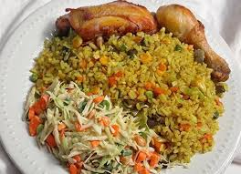

Fried Rice Recipe

Description
Fried rice is a popular dish made from pre-cooked rice that is stir-fried in a wok or frying pan with ingredients such as vegetables, eggs, and meat.
Ingredients
- 3 cups of cooked rice (preferably day-old)
- 2 tablespoons vegetable oil
- 1 onion, chopped
- 2 cloves garlic, minced
- 1 cup mixed vegetables (carrots, peas, corn)
- 2 eggs, beaten
- 2 tablespoons soy sauce
- Salt and pepper to taste
- Optional: cooked chicken, shrimp, or tofu
Steps
- Heat the vegetable oil in a large skillet or wok over medium-high heat.
- Add the chopped onion and minced garlic, and sauté until fragrant.
- Add the mixed vegetables and cook for a few minutes until tender.
- Push the vegetables to the side of the pan and pour the beaten eggs into the empty space. Scramble the eggs until fully cooked.
- Add the cooked rice to the pan, breaking up any clumps. Stir to combine with the vegetables and eggs.
- Pour the soy sauce over the rice and mix well. Season with salt and pepper to taste.
- If using, add the cooked chicken, shrimp, or tofu at this stage and stir to heat through.
- Serve hot and enjoy your fried rice!
Back to Recipes